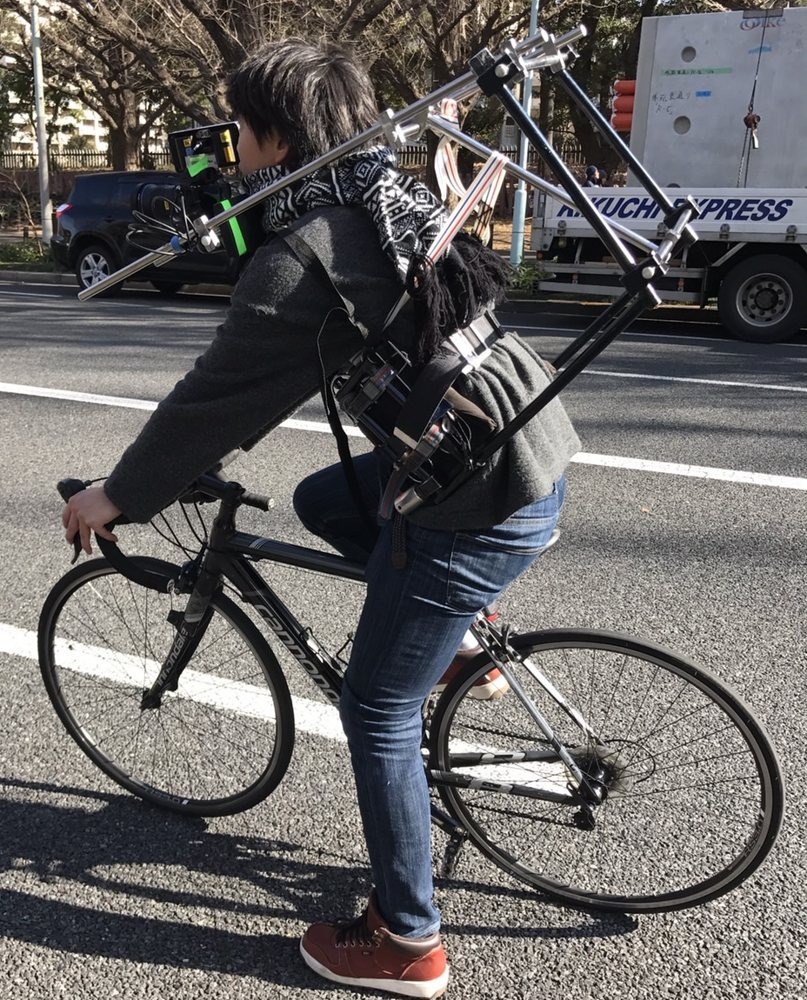

代表プロフィール

Founder / Producer / Marketer
山﨑 一輝Kazuki Yamasaki
撮影現場と、お客様のあいだに立ってきた
映像プロデューサーです。
制作会社のプロデューサーとして約10年、テレビCM・WebCMを200本以上担当してきました。
広告代理店、クリエイティブディレクター、撮影・編集のスタッフ、そしてお客様。立場の違う人たちの間に立って、言葉を通訳し、チームをまとめ、期日までに形にしてきました。
2021年にAtreyuを立ち上げ、今は大阪を拠点に、映像とマーケティングの両方から中小企業・店舗の「売れる仕組み」づくりを伴走しています。
これまでの歩み
-
ORIGIN
映像に救われた子ども時代
共働きの家庭で育ち、ひとりの時間を埋めてくれたのがテレビCMやアニメ、映画でした。映像を見ている間だけは不安を忘れられた。この原体験が、今の仕事の出発点です。
-
PRODUCER — 約10年
制作会社でCMプロデューサー・制作進行
制作会社のプロデューサー・制作進行として、テレビCM・WebCMを200本以上担当。大きなキャンペーンから小さな案件まで、代理店・監督・スタッフ・お客様の間を走り回り、予算とスケジュールを守って納品まで運ぶのが仕事でした。見積もりを作ったり、チェックしたりした案件は1,000件以上あります。
食品化粧品自動車保険テーマパーク飲食IT
撮影現場にて。カメラを背負って自転車で走る撮影も。 -
2021 —
Atreyuを創業
「いい映像を作っても、売れる仕組みがなければ届かない」。現場で何度も見てきたこの課題を解くために、映像制作とマーケティング支援を一つのチームで行うAtreyuを立ち上げました。MEO（Googleマップ対策）・SEO・LLMO（AI検索対策）・SNS運用と、映像制作をセットで支援しています。
-
NOW
クリエイターのコミュニティ「Atreyu Family」を主宰
120名以上の映像クリエイターが集まるコミュニティを運営しています。仲介手数料はゼロ。予算に合わせて、案件ごとに最適なチームを組めるのが強みです。
お手伝いできること
こんなお悩みの方に
- お店や会社の良さが、ネットでうまく伝わっていない
- SNSや動画を始めたいけれど、何から手をつければいいか分からない
- 動画を作りたいが、制作会社の見積もりが高いのか安いのか判断できない
- 代理店に任せているが、何をしてくれているのか見えない
- マーケティング担当を一人雇うほどの余裕はない
- いずれは社内で回せるようになりたい
大事にしていること
お客様が最後には自分たちで回せるようになること。外注に頼り続ける状態をつくるのではなく、伴走する期間のうちに、ノウハウと仕組みをお客様の中に残していきます。
Atreyuという名前の由来や、事業が生まれた背景は コンセプト・ルーツ にまとめています。
Contact
まずは話を聞かせてください。
ご相談の窓口は、代表の山﨑が直接担当します。
「まだ依頼するか決めていない」段階でも歓迎です。
通常3営業日以内にご返信します。